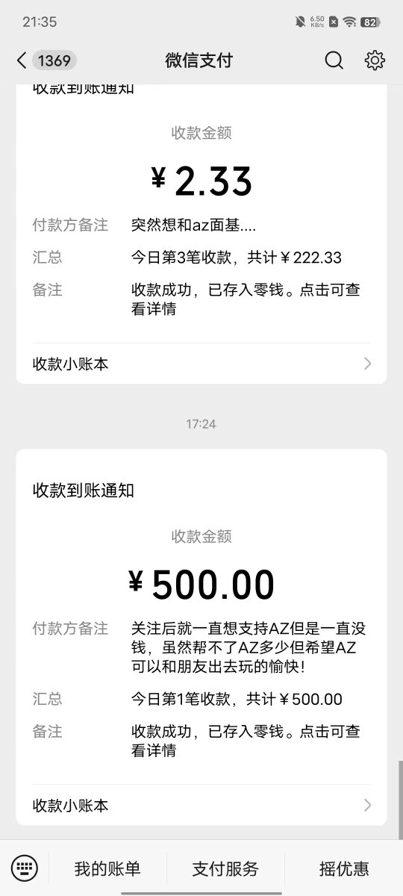
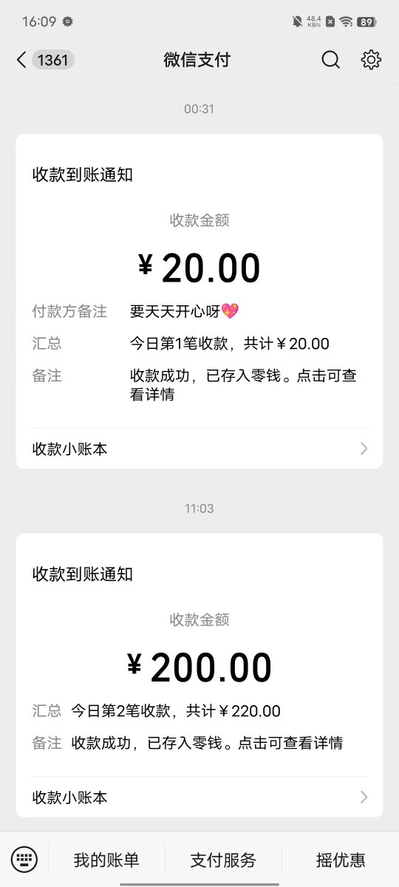
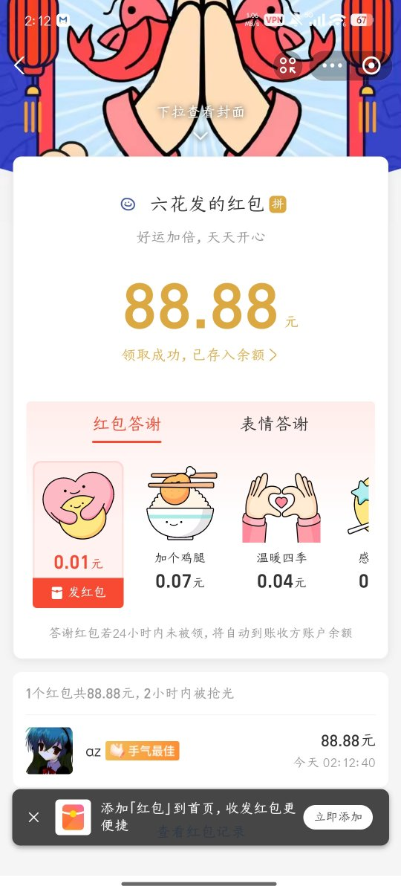

AZ.
@crossyangshe
再次感谢你们几个！@yumeialinlin az认识你！阿琳都帮助过az好几次了，真的真的很感谢阿琳！



AZ.
@crossyangshe
谢谢你们几个天使啊˃ ˄ ˂̥̥ 😭😭😭，az真的没有想到，是真的没有，在现实中这么不起眼的人竟然会在网上受到关注，想想都是一件不可能的事吧。但是现实是什么确实如此，尤其是给az援助500的人你到底是谁啊可以告诉az吗？az想对你说些感谢的话语，过几天小愈说要来长沙找az玩，希望能给az带来点光吧 https://t.co/bsBVCmoQ3u